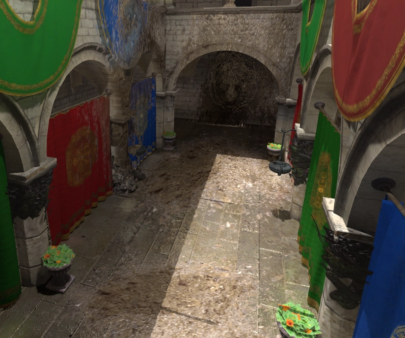
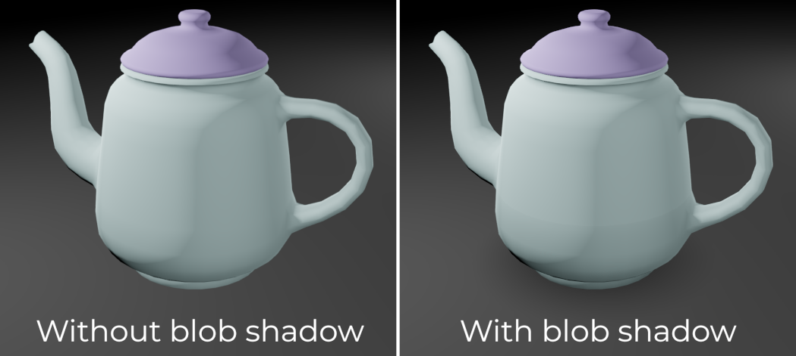
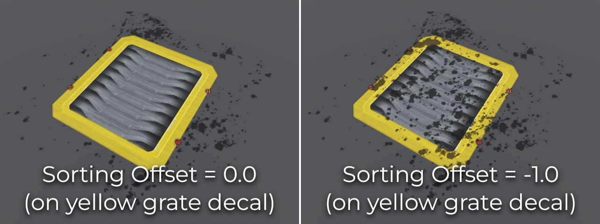

Sử dụng decal
Ghi chú
Decal chỉ được hỗ trợ trong renderer Forward+ và Mobile, không có trong renderer Compatibility.
Nếu dùng renderer Compatibility, hãy cân nhắc dùng Sprite3D làm giải pháp thay thế để chiếu decal lên các bề mặt (gần như) phẳng.
Decal là các texture được chiếu, áp lên bề mặt đục hoặc trong suốt trong 3D. Phép chiếu này diễn ra theo thời gian thực và không phụ thuộc vào việc tạo mesh. Nhờ đó bạn có thể di chuyển decal mỗi frame mà chỉ ảnh hưởng nhỏ đến hiệu năng, ngay cả khi áp lên các mesh phức tạp.
Dù decal không thể thêm chi tiết hình học thực sự lên bề mặt được chiếu, decal vẫn có thể tận dụng kết xuất dựa trên vật lý để cung cấp các thuộc tính tương tự material PBR đầy đủ.
Trong trang này, bạn sẽ học:
Cách thiết lập decal trong trình chỉnh sửa 3D.
Cách tạo decal trong lúc chơi trong một scene 3D (chẳng hạn như vết đạn).
Cách cân bằng cấu hình decal giữa hiệu năng và chất lượng.
Xem thêm
Kho dự án demo của Godot có một demo decal 3D.
Nếu bạn muốn viết văn bản 3D tùy ý lên trên một bề mặt, hãy dùng Văn bản 3D đặt gần bề mặt thay vì node Decal.
Trường hợp sử dụng
Trang trí tĩnh
Đôi khi, cách nhanh nhất để thêm chi tiết texture cho một scene là dùng decal. Điều này đặc biệt đúng với các chi tiết hữu cơ, chẳng hạn như các mảng đất hoặc cát rải rác trên một bề mặt lớn. Decal có thể giúp phá vỡ sự lặp lại của texture trong scene và làm các họa tiết trông tự nhiên hơn. Ở quy mô nhỏ hơn, decal cũng có thể được dùng để tạo biến thể chi tiết cho đối tượng. Ví dụ, decal có thể được dùng để thêm đai ốc và bu lông lên trên hình học bề mặt cứng.
Vì decal có thể đưa các thuộc tính PBR riêng lên trên các bề mặt được chiếu, chúng cũng có thể được dùng để tạo dấu chân hoặc vũng nước ướt.

Bụi bẩn được thêm lên trên hình học màn chơi bằng decal
Các yếu tố gameplay động
Decal có thể biểu diễn các hiệu ứng gameplay tạm thời hoặc lâu dài như vết đạn và vết cháy do nổ.
Bằng một node AnimationPlayer hoặc một script, bạn có thể làm decal mờ dần theo thời gian (rồi xóa bằng queue_free()) để cải thiện hiệu năng.
Blob shadow
Blob shadow thường được dùng trong các dự án di động (hoặc để theo phong cách đồ họa retro), vì chiếu sáng thời gian thực thường quá tốn kém trên thiết bị di động cấp thấp. Tuy nhiên, khi dựa vào lightmap được bake với đèn bake hoàn toàn, các đối tượng động sẽ không đổ bất kỳ bóng nào từ những đèn đó. Điều này khiến các đối tượng động trong scene dùng lightmap trông phẳng so với chiếu sáng thời gian thực, gần như trông như đang lơ lửng.
Nhờ blob shadow, các đối tượng động vẫn có thể đổ một bóng gần đúng. Điều này không chỉ giúp cảm nhận chiều sâu trong scene mà còn có thể là một yếu tố gameplay, đặc biệt trong các game platformer 3D. Chiều dài của blob shadow có thể được kéo dài để người chơi biết họ sẽ đáp xuống đâu nếu rơi thẳng xuống.
Ngay cả với chiếu sáng thời gian thực, blob shadow vẫn có thể hữu ích như một dạng ambient occlusion trong các tình huống mà SSAO quá tốn kém hoặc quá thiếu ổn định do bản chất screen-space của nó. Ví dụ, bóng dưới gầm xe được thể hiện rất tốt bằng blob shadow.

So sánh blob shadow dưới đối tượng
Hướng dẫn bắt đầu nhanh
Tạo decal trong trình chỉnh sửa
Tạo một node Decal trong trình chỉnh sửa 3D.
Trong Inspector, mở rộng mục Textures và tải một texture vào Textures > Albedo.
Di chuyển node Decal về phía một đối tượng, rồi xoay nó để decal hiển thị (và đúng hướng). Nếu decal bị lật ngược như gương, hãy thử xoay nó 180 độ. Bạn có thể kiểm tra lại xem nó có đúng hướng hay không bằng cách tăng Parameters > Normal Fade lên 0.5. Điều này sẽ ngăn Decal được chiếu lên các bề mặt không hướng về phía decal.
Nếu decal của bạn chỉ nhằm tác động lên các đối tượng tĩnh, hãy cấu hình để nó không tác động lên đối tượng động (hoặc ngược lại). Để làm vậy, hãy thay đổi thuộc tính Cull Mask của decal để loại trừ một số layer. Sau đó, sửa các node MeshInstance3D của đối tượng động để thay đổi visibility layer của chúng. Ví dụ, bạn có thể chuyển chúng từ layer 1 sang layer 2, rồi tắt layer 2 trong thuộc tính Cull Mask của decal.
Các thuộc tính của node Decal
Extents: Kích thước của decal. Trục Y xác định chiều dài phép chiếu của decal. Hãy giữ chiều dài phép chiếu càng ngắn càng tốt để tăng khả năng culling, từ đó cải thiện hiệu năng.
Texture
Albedo: Map albedo (diffuse/màu) dùng cho decal. Trong hầu hết trường hợp, đây là texture bạn muốn đặt đầu tiên. Nếu dùng normal map hoặc ORM map, bắt buộc phải đặt albedo map để cung cấp kênh alpha. Kênh alpha này sẽ được dùng làm mask để xác định mức độ normal/ORM map tác động lên bề mặt bên dưới.
Normal: Normal map dùng cho decal. Có thể dùng để tăng chi tiết cảm nhận được trên decal bằng cách thay đổi cách ánh sáng phản ứng với nó. Tác động của texture này được nhân với kênh alpha của texture albedo (nhưng không nhân với Albedo Mix).
ORM: Map Occlusion/Roughness/Metallic dùng cho decal. Đây là định dạng tối ưu để lưu các map của material PBR. Map Ambient Occlusion được lưu trong kênh đỏ, map roughness trong kênh xanh lá, map metallic trong kênh xanh dương. Tác động của texture này được nhân với kênh alpha của texture albedo (nhưng không nhân với Albedo Mix).
Emission: Texture phát sáng dùng cho decal. Khác với Albedo, texture này sẽ trông như phát sáng trong bóng tối.
Tham số
Emission Energy: Độ sáng của texture phát sáng.
Modulate: Nhân màu của texture albedo và emission. Dùng để nhuộm màu decal (ví dụ cho decal sơn, hoặc để tăng sự đa dạng bằng cách ngẫu nhiên hóa modulation của từng decal).
Albedo Mix: Độ mờ đục của texture albedo. Khác với việc dùng texture albedo có kênh alpha trong suốt hơn, giảm giá trị này xuống dưới
1.0không làm giảm tác động của texture normal/ORM lên bề mặt bên dưới. Đặt giá trị này là0.0khi tạo decal chỉ có normal/ORM như dấu chân hoặc vũng nước ướt.Normal Fade: Làm mờ Decal nếu góc giữa AABB của Decal và bề mặt đích trở nên quá lớn. Giá trị
0.0chiếu decal bất kể góc, còn giá trị0.999giới hạn decal ở các bề mặt gần như vuông góc. Đặt Normal Fade lớn hơn0.0có chi phí hiệu năng nhỏ do phải tính thêm góc normal.
Vertical Fade
Upper Fade: Đường cong mà theo đó decal sẽ mờ dần khi bề mặt càng xa tâm của AABB (về phía góc chiếu của decal). Chỉ chấp nhận giá trị dương.
Lower Fade: Đường cong mà theo đó decal sẽ mờ dần khi bề mặt càng xa tâm của AABB (ngược hướng góc chiếu của decal). Chỉ chấp nhận giá trị dương.
Distance Fade
Enabled: Điều khiển việc có bật distance fade (một dạng LOD) hay không. Decal sẽ mờ dần trong khoảng Begin + Length, sau đó nó sẽ bị cull và hoàn toàn không được gửi tới shader. Dùng tính năng này để giảm số lượng decal đang hoạt động trong scene và nhờ đó cải thiện hiệu năng.
Begin: Khoảng cách từ camera mà tại đó decal bắt đầu mờ dần (tính theo đơn vị 3D).
Length: Khoảng cách mà trong đó decal mờ dần (tính theo đơn vị 3D). Decal trở nên trong suốt dần trong khoảng cách này và hoàn toàn vô hình ở cuối. Giá trị cao hơn cho chuyển tiếp mờ dần mượt hơn, phù hợp hơn khi camera di chuyển nhanh.
Cull Mask
Cull Mask: Chỉ định các layer VisualInstance3D mà decal này sẽ chiếu lên. Mặc định, decal tác động lên tất cả các layer. Thuộc tính này giúp bạn chỉ định loại đối tượng nào nhận decal và loại nào không. Nó đặc biệt hữu ích để đảm bảo các đối tượng động không vô tình nhận một Decal vốn dành cho địa hình bên dưới chúng.
Thứ tự kết xuất decal
Mặc định, decal được sắp xếp dựa trên kích thước AABB của chúng và khoảng cách tới camera. Các AABB gần camera hơn được kết xuất trước, nghĩa là thứ tự kết xuất decal đôi khi có thể trông như thay đổi tùy theo vị trí camera nếu một số decal được đặt ở cùng một vị trí.
Để giải quyết, bạn có thể điều chỉnh thuộc tính Sorting Offset trong mục VisualInstance3D ở Inspector của node Decal. Offset này không phải là thứ tự ưu tiên nghiêm ngặt, mà là một gợi ý mà renderer sẽ dùng, vì kích thước AABB vẫn ảnh hưởng đến cách sắp xếp decal. Do đó, giá trị cao hơn luôn khiến decal được vẽ phía trên các decal khác có sorting offset thấp hơn.
Nếu bạn muốn đảm bảo một decal luôn được kết xuất phía trên các decal khác, bạn cần đặt thuộc tính Sorting Offset của nó thành một giá trị dương lớn hơn chiều dài AABB của decal lớn nhất có thể chồng lên nó. Để decal này được vẽ phía sau các decal khác, hãy đặt Sorting Offset thành cùng giá trị đó nhưng âm.

So sánh Sorting Offset của VisualInstance3D trên Decal
Tinh chỉnh hiệu năng và chất lượng
Hiệu năng kết xuất decal chủ yếu được quyết định bởi diện tích chúng phủ trên màn hình, nhưng cũng bởi số lượng. Nhìn chung, một vài decal lớn che phần lớn màn hình sẽ tốn kém hơn khi kết xuất so với nhiều decal nhỏ rải rác xung quanh.
Để cải thiện hiệu năng kết xuất, bạn có thể bật thuộc tính Distance Fade như mô tả ở trên. Điều này sẽ khiến các decal ở xa mờ dần khi chúng cách xa camera (và có thể có ít hoặc không có tác động đến kết xuất cuối cùng của scene). Dùng node group, bạn cũng có thể ngăn các decal trang trí không thiết yếu được tạo ra dựa trên cấu hình của người dùng.
Cách decal được kết xuất cũng ảnh hưởng đến hiệu năng. Cài đặt dự án nâng cao Rendering > Textures > Decals > Filter cho phép bạn điều khiển cách lọc texture decal. Nearest/Linear không dùng mipmap. Tuy nhiên, decal sẽ trông lấm tấm khi nhìn từ xa. Nearest/Linear Mipmaps sẽ trông mượt hơn ở xa, nhưng decal sẽ bị mờ khi nhìn từ góc xiên. Có thể khắc phục bằng Nearest/Linear Mipmaps Anisotropic, cho chất lượng cao nhất nhưng cũng kết xuất chậm hơn.
Nếu dự án của bạn theo phong cách pixel art, hãy cân nhắc đặt bộ lọc là một trong các giá trị Nearest để decal dùng lọc nearest-neighbor. Nếu không, hãy dùng Linear.
Hạn chế
Decal không thể tác động lên các thuộc tính material ngoài những thuộc tính đã liệt kê ở trên, chẳng hạn như height (cho parallax mapping).
Vì lý do hiệu năng, decal dùng logic kết xuất hoàn toàn cố định. Điều này có nghĩa decal không thể dùng shader tùy chỉnh. Tuy nhiên, shader tùy chỉnh trên các bề mặt được chiếu có thể đọc thông tin bị decal ghi đè lên trên chúng, chẳng hạn như roughness và metallic.
Khi dùng renderer Forward+, Godot dùng phương pháp clustering để kết xuất decal. Bạn có thể thêm bao nhiêu decal tùy ý (miễn là hiệu năng cho phép). Tuy nhiên, vẫn có giới hạn mặc định 512 phần tử cluster có thể có mặt trong góc nhìn camera hiện tại. Một phần tử cluster là một omni light, spot light, area light, decal, hoặc reflection probe. Có thể tăng giới hạn này bằng cách điều chỉnh Max Clustered Elements trong Project Settings > Rendering > Limits > Cluster Builder.
Khi dùng renderer Mobile, chỉ có 8 decal có thể được áp lên mỗi resource Mesh riêng lẻ. Nếu có nhiều decal hơn tác động lên một mesh, không phải tất cả chúng đều được kết xuất trên mesh đó.